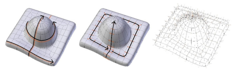
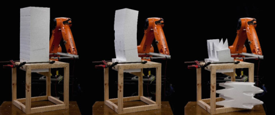

In a previous post, I talked about using a diamond wire to cut stone. The wire cutter would be attached to a 6-axis robot arm which would then be pushed through the stone. If you haven't yet read it, read it now.
Today, I want to talk about the technical approach used.
The robotic arm that performed the cutting was a German KUKA robot, which processes a proprietary toolpath instruction language known as KRL (KUKA Robot Language). Given that there was no open-hardware robot available, this had to do. KUKA robots come with a similarly proprietary simulation software, which is horrendously expensive. Luckily, there is a cheaper, but mostly functionally equivalent simulator called KukaPRC (some funky behaviour, but quite well done) written for Grasshopper, which is the visual scripting language used by Rhino.
The visual scripting language comes with a set of nodes for drag-and-drop create-your-own toolpath. Although one valid approach was to parameterise the shape of each block and use Grasshopper to generate toolpaths, we had a wider goal of more generic toolpath generation due to strangely cut shapes.
The good news is that every shape's surface is already parameterised in the form of the surface UV. Given a clean mesh topology with a lot of quads, we figured that the wire could simply follow edge rings, starting with U, an following V, until it had carved up the required shape.

The KRL syntax in its simplest form supports an XYZ for the toolhead location, along with a tool axis vector and tool "up" vector. The XYZ is all relative to a datum which is calibrated at the beginning. The datum would be an arbitrary point on the jig which would hold the stone. Each edge in the edge ring would represent the toolhead axis, and the midpoint of the edge would represent the toolhead XYZ location. The "up" vector would be logically chosen to minimise robot arm clashes.
I used Blender with a quick Python script to create the necessary vectors for the toolpath. Seams were used to denote where the cuts stopped and started, making the workflow similar to how any existing texture artist would work. This would also resolve any issues with poles made in the surface topology.
Using Blender with quad-meshes created a very fluid workflow between scanning rocks, retopologising, and generating toolpaths. The Blender script would then spit out a KRL file which we could feed into the Grasshopper-based simulator, as a final sanity check before actually carving up stone.
Because actually carving stone is slow and expensive, we would prototype with a hot-wire cutter (resistance wire with a haphazardous power pack tied to it) and styrofoam. If you clamp the foam down at the bottom and use dense foam, it sort of doesn't move around too much.

By the time I write this post, all the languages, robot APIs and scripts would be deprecated, and so is probably not worth digging up and sharing. However, the principle of edge loops and seams as a workflow was really quite intuitive, and thought the concept was worth a post.
Most toolpath generation techniques, however, do not have intuitiveness to the user as their top priority. Most also do not take into account surface striation patterns. Most would have a much more sensible goal such as minimising tool wear, or material wastage, or robot movement efficiency. This approach does absolutely none of that and is therefore useless for any proper production. Still, pretty slick for rapid prototyping.